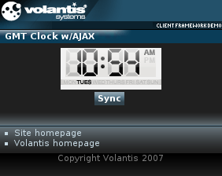

The Clock widget presents current time and date in a form of a digital clock. It can be periodically synchronized with an external source via AJAX requests. If the AJAX server is not specified, time from the local device is used.

<widget:digital-clock id="myClock">
<widget:refresh src="service/clock" interval="30"/>
<widget:clock-content type="digit" value="0">
<object src="/images/clock/clockWidget_grey_0_r_01.mimg">0</object>
</widget:clock-content>
<widget:clock-content type="digit" value="1">
<object src="/images/clock/clockWidget_grey_1_r_01.mimg">1</object>
</widget:clock-content>
...
<widget:clock-content type="separator" value="1">
<object src="/images/clock/cell_5_11x37.mimg">:</object>
</widget:clock-content>
<widget:clock-content type="separator" value="2">
<object src="/images/clock/clockWidget_grey_null_r_01.mimg"/>
</widget:clock-content>
<widget:clock-content type="separator" value="3">
<object src="/images/clock/clockWidget_grey_pause_r_01.mimg"/>
</widget:clock-content>
<widget:clock-content type="ampm" value="am">
<object src="/images/clock/clockWidget_grey_am_r_01.mimg">AM</object>
</widget:clock-content>
<widget:clock-content type="ampm" value="pm">
<object src="/images/clock/clockWidget_grey_pm_r_01.mimg">PM</object>
</widget:clock-content>
</widget:digital-clock><widget:refresh src="service/clock" interval="30"/>
<response:response xmlns="http://www.w3.org/2002/06/xhtml2"
xmlns:mcs="http://www.volantis.com/xmlns/2006/01/xdime/mcs"
xmlns:response="http://www.volantis.com/xmlns/2006/05/widget/response">
<response:head>
<response:link rel="mcs:theme" href="/main.mthm"/>
</response:head>
<response:body>
<response:clock>[2007,2,1,10,25,2,1172744702507]</response:clock>
</response:body>
</response:response>
<widget:script id="refresh-script">
$W("myClock").forceSync()
$W("myClockDoW").forceSync()
</widget:script><widget:button action="refresh-script#invoke">Sync</widget:button>
<?xml version="1.0" encoding="UTF-8"?>
<html xmlns="http://www.w3.org/2002/06/xhtml2"
xmlns:mcs="http://www.volantis.com/xmlns/2006/01/xdime/mcs"
xmlns:template="http://www.volantis.com/xmlns/marlin-template"
xmlns:widget="http://www.volantis.com/xmlns/2006/05/widget">
<head>
<title>Digital Clock Widget</title>
<link rel="mcs:theme" href="/themes/main.mthm"/>
<link rel="mcs:layout" href="/layouts/main.mlyt"/>
<style type="text/css" media="handheld,all">
#myClock{
mcs-datetime-format: '%h%1%i%A';
}
#myClockDoW{
mcs-datetime-format: '%D';
}
.top{
vertical-align: top;
}
.bottom{
vertical-align: bottom;
}
</style>
<widget:script id="refresh-script">
$W("myClock").forceSync()
$W("myClockDoW").forceSync()
</widget:script>
</head>
<body>
<template:apply href="templates/demo-main.xdtpl">
<template:binding name="title" value="GMT Clock w/AJAX"/>
<template:binding name="content">
<template:complexValue>
<div style="margin:auto;width:128px;text-align:center;">
<div style="background-color: #f1f1f1;width: 128px;">
<div>
<widget:digital-clock id="myClock">
<widget:refresh src="service/clock" interval="30"/>
<widget:clock-content type="digit" value="0">
<object src="/images/clock/clockWidget_grey_0_r_01.mimg">0</object>
</widget:clock-content>
<widget:clock-content type="digit" value="1">
<object src="/images/clock/clockWidget_grey_1_r_01.mimg">1</object>
</widget:clock-content>
<widget:clock-content type="digit" value="2">
<object src="/images/clock/clockWidget_grey_2_r_01.mimg">2</object>
</widget:clock-content>
<widget:clock-content type="digit" value="3">
<object src="/images/clock/clockWidget_grey_3_r_01.mimg">3</object>
</widget:clock-content>
<widget:clock-content type="digit" value="4">
<object src="/images/clock/clockWidget_grey_4_r_01.mimg">4</object>
</widget:clock-content>
<widget:clock-content type="digit" value="5">
<object src="/images/clock/clockWidget_grey_5_r_01.mimg">5</object>
</widget:clock-content>
<widget:clock-content type="digit" value="6">
<object src="/images/clock/clockWidget_grey_6_r_01.mimg">6</object>
</widget:clock-content>
<widget:clock-content type="digit" value="7">
<object src="/images/clock/clockWidget_grey_7_r_01.mimg">7</object>
</widget:clock-content>
<widget:clock-content type="digit" value="8">
<object src="/images/clock/clockWidget_grey_8_r_01.mimg">8</object>
</widget:clock-content>
<widget:clock-content type="digit" value="9">
<object src="/images/clock/clockWidget_grey_9_r_01.mimg">9</object>
</widget:clock-content>
<widget:clock-content type="separator" value="1">
<object src="/images/clock/cell_5_11x37.mimg">:</object>
</widget:clock-content>
<widget:clock-content type="separator" value="2">
<object src="/images/clock/clockWidget_grey_null_r_01.mimg"/>
</widget:clock-content>
<widget:clock-content type="separator" value="3">
<object src="/images/clock/clockWidget_grey_pause_r_01.mimg"/>
</widget:clock-content>
<widget:clock-content type="ampm" value="am">
<object src="/images/clock/clockWidget_grey_am_r_01.mimg">
AM</object>
</widget:clock-content>
<widget:clock-content type="ampm" value="pm">
<object src="/images/clock/clockWidget_grey_pm_r_01.mimg">
PM</object>
</widget:clock-content>
</widget:digital-clock>
</div>
<div>
<widget:digital-clock id="myClockDoW">
<widget:refresh src="service/clock" interval="30"/>
<widget:clock-content type="day" value="1">
<object src="/images/clock/clockWidget_grey_sun_r_01.mimg"
class="top">Sun</object>
</widget:clock-content>
<widget:clock-content type="day" value="2">
<object src="/images/clock/clockWidget_grey_mon_r_01.mimg"
class="top">Mon</object>
</widget:clock-content>
<widget:clock-content type="day" value="3">
<object src="/images/clock/clockWidget_grey_tues_r_01.mimg"
class="top">Tue</object>
</widget:clock-content>
<widget:clock-content type="day" value="4">
<object src="/images/clock/clockWidget_grey_wed_r_01.mimg"
class="top">Wed</object>
</widget:clock-content>
<widget:clock-content type="day" value="5">
<object src="/images/clock/clockWidget_grey_thurs_r_01.mimg"
class="top">Thu</object>
</widget:clock-content>
<widget:clock-content type="day" value="6">
<object src="/images/clock/clockWidget_grey_fri_r_01.mimg"
class="top">Fri</object>
</widget:clock-content>
<widget:clock-content type="day" value="7">
<object src="/images/clock/clockWidget_grey_sat_r_01.mimg"
class="top">Sat</object>
</widget:clock-content>
</widget:digital-clock>
</div>
</div>
<div class="buttons">
<widget:button action="refresh-script#invoke">Sync</widget:button>
</div>
</div>
</template:complexValue>
</template:binding>
</template:apply>
</body>
</html>
| Name | Purpose |
|---|---|
| div | A section used to add extra structure to documents. Style sheets can be used to control the presentation. |
| response:clock | Allows a Clock widget to synchronize its time with an external source via AJAX. The service must return time in milliseconds since the standard base time: January 1, 1970, 00:00:00 GMT. |
| widget:button | A general purpose element, used by widgets which need a button-like control. |
| widget:clock-content | Defines a markup for the clock digits, separators, AM/PM indicators, as well as the day and month names. It can contain any markup, in particular text and images. |
| widget:digital-clock | Defines a digital clock. |
| widget:refresh | Allows a widget to update its contents. |
| Core attributes | Attributes that are common to XDIME 2 elements. |